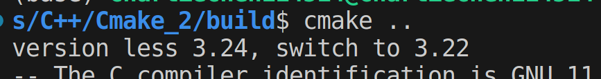
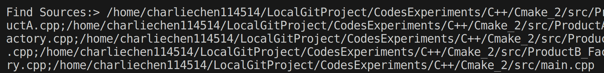

CMake使用小记1
CMake使用小记1
.
├── AbsrtactProduct.h
├── AbstractFactory.h
├── build
├── FactoriesAndProducts.h
├── ProductA_Factory.h
├── ProductA.h
├── ProductB_Factory.h
├── ProductB.h
└── src
├── main.cpp
├── ProductA.cpp
├── ProductA_Factory.cpp
├── ProductB.cpp
└── ProductB_Factory.cpp
2 directories, 14 files 如诸位所见，本次构建是针对这个我先前写的抽象工厂示例的工程，现在准备开始构建它.
CMake使用习惯1：预先准备好build文件夹来装载生成的文件
我们习惯这样做，这样有助于我们对CMake生成的文件的清理和调整。
mkdir build
cd build
cmake .. 是我们常见的三个基本步骤。不过，现在没有CMakeLists.txt，需要我们自己写。
cmake_minimum_required
一般而言，我们的CMakeLists的开头总是这个（喜），他标志着要求的CMake的最低版本，为此我打算演示一下：
cmake_minimum_required(VERSION 3.22) 这个指令就会要求我们的CMake最低版本是3.22，如果没有达到，默认的路径是退出
CMake Error at CMakeLists.txt:1 (cmake_minimum_required):
CMake 3.24 or higher is required. You are running version 3.22.1 一个良好的处理办法是：通知并尝试切换：
if(${CMAKE_VERSION} VERSION_LESS 3.24)
cmake_minimum_required(VERSION ${CMAKE_MAJOR_VERSION}.${CMAKE_MINOR_VERSION})
message(STATUS "version less 3.24, switch to ${CMAKE_MAJOR_VERSION}.${CMAKE_MINOR_VERSION}")
else()
cmake_minimum_required(VERSION 3.24)
message(STATUS "version is good, no need to switch")
endif()
project
这个指令指代的是当前的工程名如何。比如说，我的CMakeLists下是：
project(Hello
VERSION 1.0
DESCRIPTION "A demo for Abs factory")
message(
STATUS
"Ready to config the project:> ${PROJECT_NAME}\n
The Project Version is ${PROJECT_VERSION}\n
Project descriptions are follows:> ${PROJECT_DESCRIPTION}\n
Build start\n\n\n"
)-- Ready to config the project Hello
The Project Version is 1.0
Project descriptions are follows:> A demo for Abs factory
Build start 这里设置了一些描述性质的内容。
包含目录
有点时候，我们会发现需要把外部工程的头文件打包进来，这就需要我们：
include_directories() 虽然这样些CMake的习惯不好
message("the building will set the project source dir in:> ${PROJECT_SOURCE_DIR}\n")
include_directories(${PROJECT_SOURCE_DIR}) 但是想偷懒（），这里就把自己的头文件文件夹扔进include directories就可以了。
检索所有的目标文件
file 下面这个指令可以在目标文件夹下递归的查找所有符合正则表达式的文件，比如说这里就会在我的src文件夹下找出所有的.cpp文件，存放到mySource这个变量下。
file(
GLOB_RECURSE mySource
${PROJECT_SOURCE_DIR}/src/*.cpp
) 这个时候我们可以尝试打印一下：

嗯，一大堆。
生成可执行文件
add_executable(exe ...)
# ...换成自己的源文件即可 就可以了。
构建
cmake CMAKELISTS_PATH # 我这里CMakeLists在上层，直接cmake ..
make 就可以了，实际上的编译问题在make会告诉你。
全体目光向我看齐，我宣布个事！是我Charliechen写的这篇文章！(?)